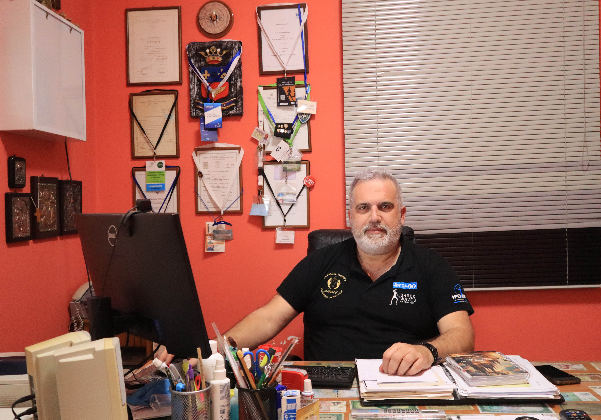
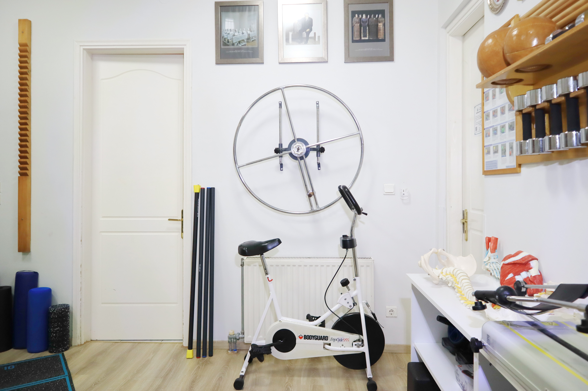
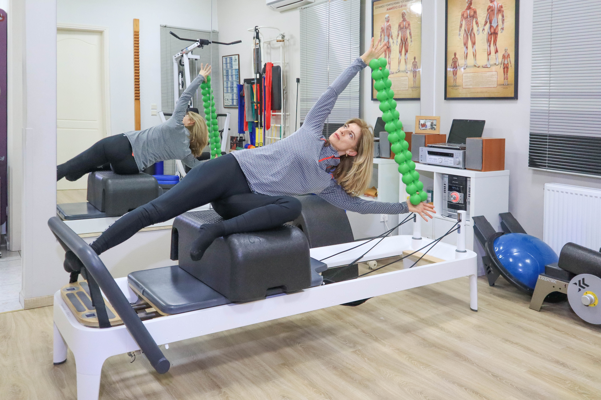
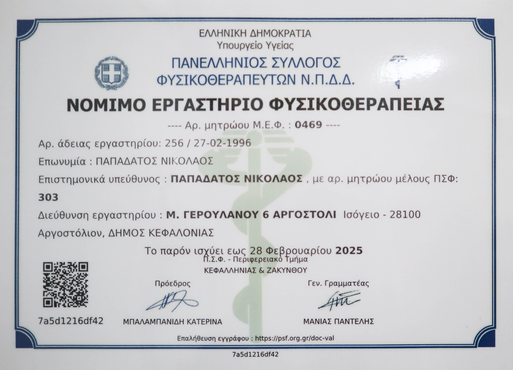
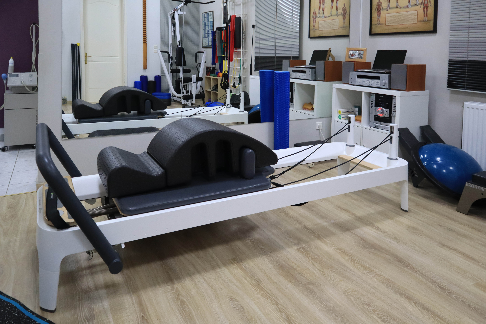
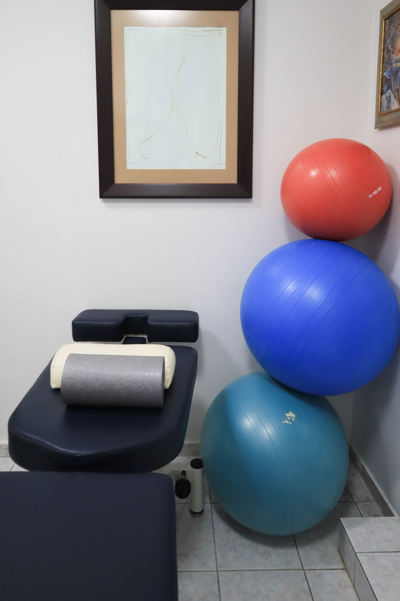

Νικόλαος Γ. Παπαδάτος
Φυσικοθεραπευτής | Απόφοιτος ΤΕΙ Αθηνών, 1992Ηγείται της κλινικής με πολυετή εμπειρία και έμφαση στην εξατομικευμένη φυσικοθεραπεία, το manual therapy και τη λειτουργική αποκατάσταση.

Το IASIS συνδυάζει φυσικοθεραπεία και Clinical Pilates σε ένα προσεγμένο θεραπευτικό περιβάλλον όπου κάθε πλάνο βασίζεται στον άνθρωπο και όχι σε μια τυποποιημένη διαδικασία.
Η κλινική IASIS προσφέρει ολοκληρωμένες υπηρεσίες φυσικοθεραπείας με σύγχρονο εξοπλισμό, πολυετή εμπειρία και εξατομικευμένη φροντίδα. Εξειδικευόμαστε στην αποκατάσταση τραυματισμών, στις χρόνιες μυοσκελετικές και νευρολογικές παθήσεις, στο manual therapy και στο Clinical Pilates.


Ηγείται της κλινικής με πολυετή εμπειρία και έμφαση στην εξατομικευμένη φυσικοθεραπεία, το manual therapy και τη λειτουργική αποκατάσταση.

Συνδυάζει αποκατάσταση μέσω κίνησης, καθοδήγηση στο Clinical Pilates και προσεκτική πρόοδο προσαρμοσμένη στις δυνατότητες κάθε ασθενούς.

Υποστηρίζει τους θεραπευόμενους με προσοχή στη λεπτομέρεια, δομημένη άσκηση και ισχυρή έμφαση στον έλεγχο, την αυτοπεποίθηση και την πρόληψη.
Θεραπευτικές διαδρομές προσαρμοσμένες σε πόνο, δυσκαμψία, περιορισμό και χρόνια επιβάρυνση των αρθρώσεων.
Σχέδια αποκατάστασης για υπέρχρηση, θλάσεις, αστάθεια και ασφαλή επιστροφή στη δραστηριότητα.
Δια χειρός τεχνικές που συνδυάζονται με ενεργητική αποκατάσταση και όχι ως απομονωμένη λύση.
Αποκαταστασιακά προσανατολισμένο σύστημα κίνησης για σταθεροποίηση, επίγνωση σώματος και ασφαλέστερη φόρτιση.
Οι θεραπευτικές αποφάσεις λαμβάνουν υπόψη το ιατρικό ιστορικό, τα συμπτώματα και ρεαλιστικούς λειτουργικούς στόχους.
Σύγχρονα μέσα φυσικοθεραπείας επιλεγμένα με βάση το πλάνο του κάθε ασθενούς και όχι από συνήθεια.
Προσεγμένοι χώροι που υποστηρίζουν δια χειρός θεραπεία, άσκηση και ιδιωτικότητα.
Κλινικό περιβάλλον που επιτρέπει αξιολόγηση, διορθωτική άσκηση και σωστή εξέλιξη της θεραπείας.
Εξειδικευμένος εξοπλισμός για συνεδρίες Clinical Pilates σε Mat και Reformer.

